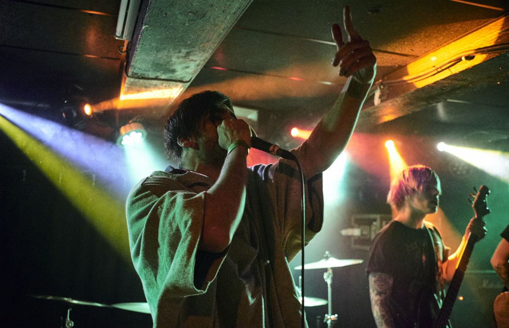
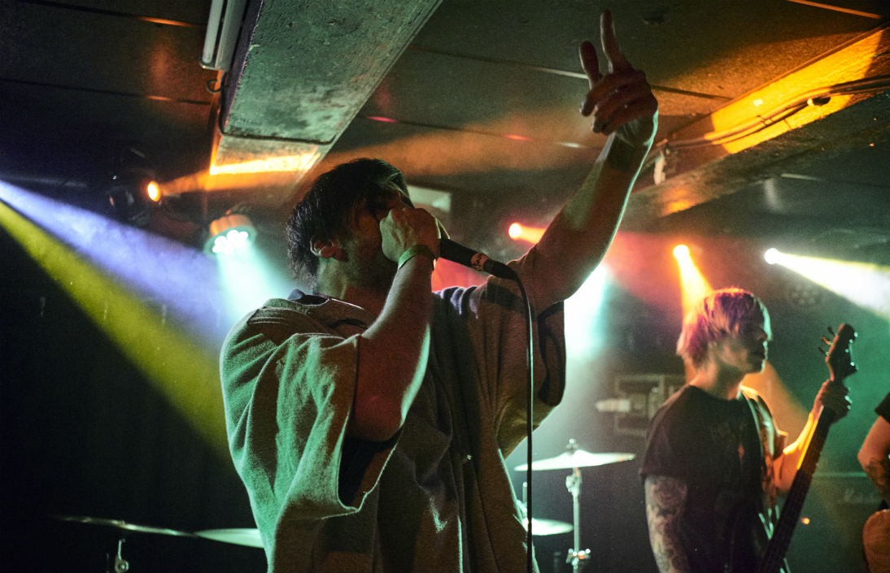

Denne scene er Husets legendariske rock/pop scene med et stort PA, god lydisolering og god akustik, og er Husets største og ældste scene. Den har i snart 40 år præsenteret dansk og internationalt vækstlagsmusik, og har endda dannet scene for flere prominente artister gennem tidernes løb.
På tredje sal i Huset finder du Musikcaféen, som er Husets største og ældste scene. Scenen præsenterer up-and-coming kunstnere inden for blandt andet rock, pop og alternativ musik. Scenen har i mere end 40 år været stedet, hvor du møder de nyeste kunstnere først.
Scenen har lagt rammer til legendariske koncerter med DAD, Red Hot Chili Peppers, The William Blakes, Oh Land, Rumour Said Fire, Dagny og Dizzy Mizz Lizzy. Sidstnævnte tog herfra med vindertitlen i DM i Rock i 1993.
Udover musik kan du hver tirsdag deltage i Open Mic Stand-Up for Red Barnet Ungdom – enten som gæst eller komiker. Se kommende stand-up-arrangementer på Facebook.
Kan anvendes til: Koncerter, releases, evt. receptioner
Max kapacitet: 150
Faciliteter på stedet: Bar med stor kølekapacitet, caféborde og stole. Baren bemandes ALTID af Husets personale og omsætningen tilfalder Huset-KBH. Evt. brug af lydtekniker, lystekniker m.v. betales særskilt. Se tech specs her.
Muligheder for catering: begrænset
Rengøring: Inkl. i lejeprisen.
Priser afhænger af arrangementets karakter, samt behov for teknisk bistand, servering etc.
Peter Krog Andersen: Sabech@kff.kk.dk
Tlf: +45 31 31 02 21